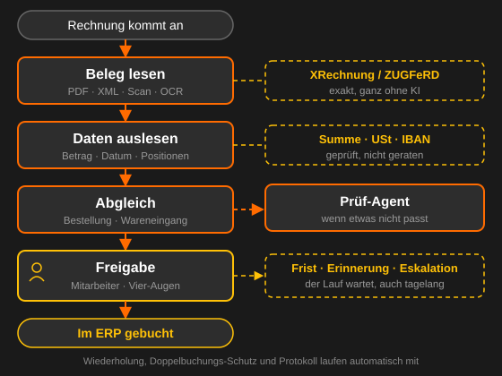
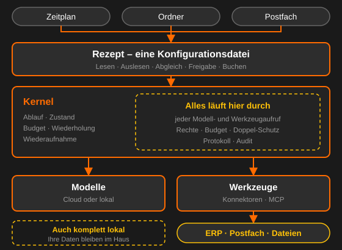

Was ist das?
Office Agent automatisiert Dokumenten- und Wissensarbeit im Büro: Belege und Vorgänge kommen herein, werden gelesen, ausgewertet, gegen Ihre Systeme abgeglichen, an der richtigen Stelle einem Menschen zur Freigabe vorgelegt und danach zurückgeschrieben. Was dabei entsteht, ist kein Textvorschlag, sondern ein geprüfter Datensatz mit einer nachvollziehbaren Entstehungsgeschichte.
- Ein Anwendungsfall ist eine Konfigurationsdatei, kein eigenes Programm
- Das Modell entscheidet über Inhalte – der Ablauf entscheidet über den Weg
- Kein Modellergebnis geht ungeprüft weiter: erst Prüfung, Schwelle oder Mensch
- Jeder Lauf ist dauerhaft gespeichert, übersteht einen Neustart und ist im Nachhinein erklärbar
Ein Anwendungsfall von vorn bis hinten
Der Rechnungseingang zeigt das Prinzip am besten, weil in ihm alles vorkommt: ein Beleg in beliebigem Format, Werte, die stimmen müssen, ein Abgleich gegen die Bestellung, eine Freigabe durch einen Menschen und am Ende eine Buchung, die genau einmal passieren darf.

Der Prüf-Agent rechts kommt nur zum Zug, wenn der Abgleich nicht aufgeht. Er darf lesen, nicht schreiben, und sein Ergebnis ist ein Hinweis für den Menschen – nie eine Entscheidung. Genau so bleibt ein nicht-deterministischer Baustein in einem prüfbaren Prozess vertretbar.
Funktionen
Rezept statt Programm
Ein neuer Anwendungsfall ist eine Konfiguration über bestehenden Bausteinen – nicht wochenlange Entwicklung.
Freigabe, wo es zählt
Rollen, Betragsgrenzen, Vier-Augen-Prinzip, Fristen und Eskalation gehören zum Ablauf, nicht zum Zufall.
Hält durch
Ein Lauf übersteht einen Neustart und wartet notfalls tagelang auf eine Freigabe – ohne Verlust.
Gerechnet, nicht geraten
Summen, USt-Regeln und IBAN-Format werden geprüft. Was durchfällt, geht an einen Menschen statt weiter.
Zurück bis zum Beleg
Zu jedem Wert gehört die Seite und die Textstelle im Original. Vorschlag und Freigabe stehen beide im Protokoll.
An Ihre Systeme
Konnektoren zu ERP, Postfach und Dateiablage – nativ oder über MCP. Der Modell-Anbieter ist Konfiguration.
So funktioniert es
- Ein Ordner, ein Zeitplan oder ein Postfach löst einen Lauf aus
- Das Rezept arbeitet seine Schritte ab: lesen, auslesen, abgleichen, prüfen
- Unsicheres oder Auffälliges geht zur Freigabe an einen Menschen
- Danach schreibt das System zurück – einmal, nicht zweimal
- Nachweiskette: Beleg → Werte → Freigabe → Buchungsnummer
Gut zu wissen
Der Kniff liegt in der Zerlegung. Die Anwendungsfälle sehen völlig verschieden aus, bestehen aber aus rund einem Dutzend immer gleicher Bausteine: lesen, einordnen, auslesen, abgleichen, prüfen, bewerten, beantworten, entwerfen, freigeben, zurückschreiben. Wer die einmal sauber baut, bekommt den nächsten Anwendungsfall als Konfiguration.
Feste Hülle, KI im Kern: Das Modell entscheidet über Inhalte, der Ablauf über den Weg. Ob eine Freigabe stattfindet, steht im Rezept – das Modell kann sie nicht überspringen.
Kann ich Office Agent schon einsetzen?
Office Agent ist in Entwicklung. Der Kern läuft, der erste Anwendungsfall – Rechnungseingang – entsteht gerade. Bei Interesse melden Sie sich gern: frühe Pilotprojekte bestimmen mit, welche Module zuerst kommen.
Läuft das bei uns im Haus?
Ja, auf Ihrer Infrastruktur oder in Ihrer privaten Cloud. Ein Mandant, keine gemeinsam genutzten Dienste, keine Telemetrie.
Verlassen unsere Dokumente das Haus?
Nur, wenn Sie ein Cloud-Modell wählen. Der Modell-Endpunkt ist pro Installation konfigurierbar – mit einem lokalen Modell bleibt jedes Dokument auf Ihrer Hardware.
Entscheidet die KI über Zahlungen?
Nein. Ob eine Freigabe stattfindet, legt das Rezept fest, nie das Modell. Änderungen an Bankverbindung oder Empfänger brauchen ein eigenes Recht und laufen nie automatisch durch.
Was passiert bei einem Absturz mitten im Lauf?
Der Lauf ist dauerhaft gespeichert und wird nach dem Neustart fortgesetzt. Jeder Schreibvorgang trägt einen Schlüssel gegen Doppelbuchungen; wo das Zielsystem das nicht hergibt, liest das System nach oder legt den Fall einem Menschen vor.
Was ist mit GoBD und DSGVO?
Der eingegangene Beleg wird unverändert archiviert, ausgelesene Werte liegen getrennt daneben. Das Audit-Protokoll ist anfügend und ohne Löschrecht, und personenbezogene Daten hängen an einem Geltungsbereich, über den sie gelöscht werden können.
Brauche ich pro Anwendungsfall ein neues Programm?
Nein. Ein Anwendungsfall ist eine Konfigurationsdatei über bestehenden Bausteinen. Braucht er wirklich neuen Code, fehlt ein Baustein – und das ist eine bewusste Erweiterung, keine Routine.
Wie es aufgebaut ist
Alles, was Geld kostet oder Wirkung hat – jeder Modellaufruf, jeder Zugriff auf ein Firmensystem – läuft durch eine einzige Stelle. Dort sitzen Rechte, Budget, Doppelbuchungs-Schutz und Protokoll. Ein Schritt kann sie nicht umgehen, weil er Modelle und Werkzeuge gar nicht selbst in der Hand hält.

Bewusst ohne Agenten-Framework gebaut: Solche Bibliotheken ändern sich schnell, ziehen große Abhängigkeitsbäume in eine Umgebung, die durch die IT-Sicherheitsprüfung muss, und lösen genau die schweren Teile nicht – dauerhafte Läufe, Freigaben, Nachvollziehbarkeit, Anbindung.
Wofür?
Finanzen
Rechnungseingang erfassen und abgleichen, Reisekosten prüfen, Mahnungen entwerfen, Kontoabgleich unterstützen.
Dokumente
Klassifizieren und weiterleiten, Daten auslesen, in ERP oder CRM eintragen, Stammdaten bereinigen.
Einkauf
Bedarfe aufnehmen, Lieferantendaten anlegen, Angebote vergleichen, Verlängerungen und Preise im Blick behalten.
Recht & Compliance
Klauseln gegen Ihre Standards prüfen, Pflichten und Fristen herausziehen, Regeländerungen überwachen.
IT & Support
Tickets vorsortieren, einfache Fragen aus der Wissensdatenbank beantworten, Störungen zusammenfassen.
Verwaltung & HR
Interner Helpdesk, Protokolle und Aufgaben aus Besprechungen, Stellenausschreibungen entwerfen, Onboarding steuern.
Maßgeschneidert für Sie
Office Agent wird nicht programmiert, sondern eingestellt – auf Ihre Abläufe, Ihre Systeme und Ihr internes Kontrollsystem:
- Der Anwendungsfall als Rezept: Schritte, Schwellen, Fristen und Zuständigkeiten sind Konfiguration
- Freigabe-Regeln nach Ihren Vorgaben: Rollen, Betragsgrenzen, Vier-Augen-Prinzip
- Modell frei wählbar – in der Cloud oder lokal auf Ihrer Hardware
- Konnektoren zu Ihren Systemen: nativ oder über MCP
- Testlauf-Modus: jeder Schreibvorgang wird nur simuliert und protokolliert
- Probelauf über Ihre eigenen Altbelege – Sie sehen die Trefferquote, bevor Sie sich entscheiden
Prüfsicher von Anfang an
Ein System, durch das Belege auf ihrem Weg in die Buchhaltung laufen, ist ein Vorsystem im Sinne der GoBD. Das lässt sich nicht nachträglich anbauen, also ist es von Beginn an Teil des Entwurfs:
- Originalzustand: der eingegangene Beleg bleibt unverändert erhalten – ausgelesene Werte liegen daneben, nie darüber
- Belegfunktion: Beleg → ausgelesene Werte → Freigabe → Buchungsnummer, als Kette abfragbar
- Audit: anfügend und ohne Löschrecht – mit Person, Zeit, Rezept-Version, Modell und Begründung
- DSGVO: Personenbezug hängt an einem Geltungsbereich und ist darüber löschbar; der Modell-Endpunkt ist konfigurierbar
- EU AI Act: die Module bleiben bewusst außerhalb der Hochrisiko-Kategorie – Bewerberauswahl und Leistungsbewertung sind nicht Teil des Systems
- Betriebsrat: Kennzahlen pro Person werden nicht gebaut. Zuordnung dient der Kontrolle, nicht der Messung
Sicherheit: Jedes verarbeitete Dokument gilt als feindliche Eingabe – sein Inhalt ist Daten, niemals Anweisung. Dasselbe gilt für die Antwort eines angebundenen Systems. Die Werkzeuge stehen pro Schritt fest, das Modell kann sich keine neuen nehmen, und ein Prüf-Agent darf ohne ausdrückliche Freigabe nur lesen.
In Aktion sehen
Ich zeige Ihnen Office Agent gerne an einem Beispiel-Ablauf – oder wir schauen gemeinsam, welcher Ihrer Vorgänge sich als Erstes lohnt.
Demo anfragenAuf einen Blick
Passt dazu: Office Agent ist die große Ausbaustufe meiner Automatisierung; die Anbindung an Ihre Systeme beschreibt die Seite zur KI-Integration & MCP.
Office Agent für Ihren Anwendungsfall
Erstgespräch kostenfrei – vor Ort in Bamberg/Nürnberg oder online.